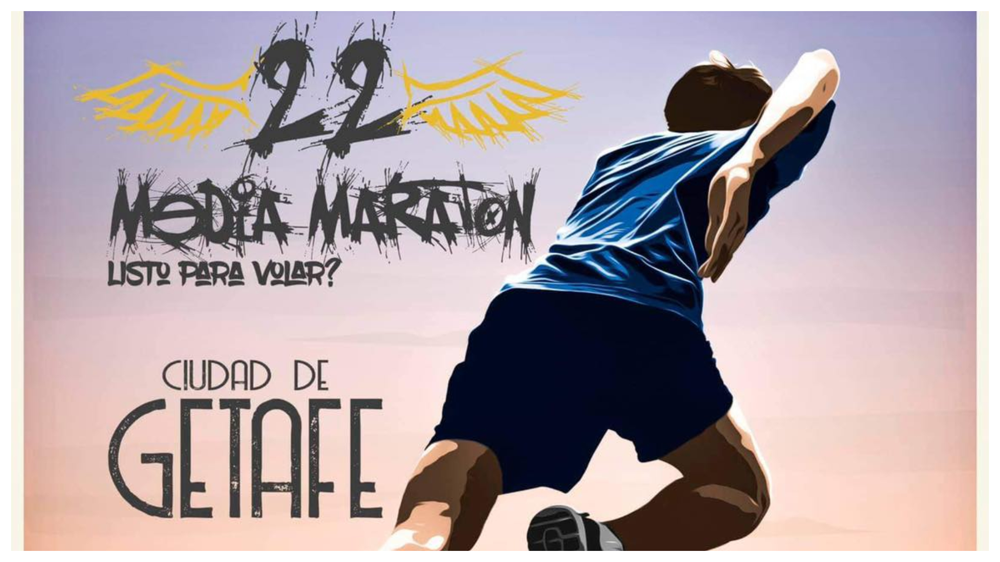
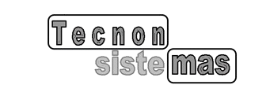

Work Experience
Event Organization and Staff.2021-2023
Route planner and staff member for the “City of Getafe Half Marathon”.

Press Cameraman.2022
Operated interview camera for “La Caja de Música” magazine at the Ágatha Ruiz de la Prada fashion show and the premiere of the Atresmedia series “Déjate Ver”.
Caregiver.2022
Provided maintenance and care for children, adolescents, and elderly individuals.


Communication and Systems Technician2023-2024
At Tecnon Sistemas, I was responsible for the implementation and maintenance of technological infrastructures, with a special focus on:
- Installation and configuration of electronic devices and communication systems
- Technology deployment for the ACING Military Base (Army Engineers Academy)
- System implementation for ACS (Actividades de Construcción y Servicios, S.A.)
Employee at McDonald's.2024-2025
Worker at McDonald's performing customer service tasks, order preparation, cleanliness maintenance, and kitchen support.